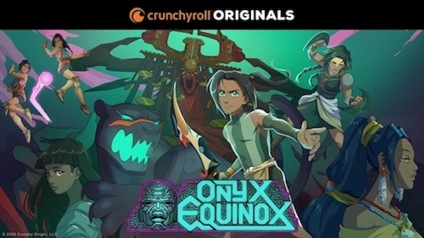

Remaking the Network: Representation in Animation
By Kiana Carrington
Using a Black feminist lens, I aim to investigate the role of decision-makers in the "reliable or unreliable"
storytelling of popular animated TV series of the last three decades.
Reliability is a term closely associated with Dominique C. Hill's research on Black girlhood
Being "Black girl reliable" requires a few things:
Intimacy: Creating communal teaching and learning spaces with the intention to learn with each other, NOT observe and extract knowledge from Black girls.
- Space: The spaces we make for Black girls must be or working toward being expansive, imaginative, and thoughtful
enough to hold a celebration of all Black girls.
- Intimacy: Intimacy: Creating communal teaching and learning spaces with the intention to learn with each other,
NOT observe and extract knowledge from Black girls.
- Empathy: See ourselves in Black girls and them in us. Black girls are knowledge producers and full of
solutions to issues they and other minoritized individuals face.
I believe these principles can be expanded beyond research with Black girls.
What can it look like when those with decision making power are "reliable to"
the communities of color they are looking to portray? What if the push for diversity
on screen translated to more people of color in the writing room? Directing?
Voice acting?
This project examines the "social network" of the American animation industry, focusing on content creators of the
last 30 years. Though representation on screen is improving, what's even more important is who tells these stories of
minoritized communities.
- What does changing the face of animated characters but not the artistic and producing bodies do to the genre?
- How is representation of Black characters in animation different when Black people are the creators?
- What can it look like for studios to reliably represent communities of color?
While pondering these questions I couldn't help but think of my own childhood and the shows that resonated
with me growing up, like The Proud Family and Happily Ever After Fairy Tales for Every Child.
Who were the people behind some of my favorite shows? Did they look like me? How did that affect the final product?
As we all know in Hollywood, it's all about who you know, so with this project I set out to create that network
of people visually.
To Be or Not to Be...Reliable
Earlier this year, amid national unrest due to police brutality, a shake up
also occurred in Hollywood. White actors stepped down from prominent roles on popular
animated TV series like Big Mouth and Central Park, citing that they no longer felt comfortable
playing these characters.
Yes, this was noble of the actors for calling for change, but again I wondered who put them there?
No data was available as I tried to find the answer BUT
the Annenburg Institute had some pretty interesting
things to say on the matter.
The Annenberg Institute at the University of Southern California is the premiere research body on diversity in Hollywood.
According to their survey of 120 animated films and 100 animated TV series, women, especially women of color, have difficulty reaching leadership positions.
Although many of the top animation programs in the country are majority women (roughly 69% in 2018),
only 7-10% of leadership positions in animation studios (running story, writing, and unit heads) were held by women.
In addition, only 3% of animated TV show directors were women of color.

Diving into the Data
I could not find any datasets on my topic so I decided to make one!
To create my dataset, I combined several different files that IMDb has made available to the public.
IMDb gives you up to 10 people that have worked on a show based on how they are ordered on the IMDb page for that show or film.
The people in this dataset are not chosen by me, they are the people who were in the IMDb datasets.
I removed all shows created outside the United States from the dataset to focus on American TV shows.
I then scoured Google, Wikipedia, and the fandom pages of individual shows for additional information,
like the original TV network a show debuted on, race of people in my dataset and their gender.
I then scoured Google, Wikipedia, and the fandom pages of individual shows for additional information,
like the original TV network a show debuted on, race of people in my dataset and their gender.
The graph below includes information for the 50 most popular American animated series from 1989 to the present.
I used the total number of votes on IMDb as the measure for popularity and chose 1989 as the start year since that was the year
The Simpsons, the longest running scripted TV series, began. The size of the nodes are based on the show's popularity.
The most popular shows have the largest circles.
I used a visualization by Raven Gao
as inspiration for my project.
Top 50 Animated Series 1989-Present
Legend
- Nodes are grouped by TV Network
- Gray = Show
- Yellow = Person of Color
- Blue = White Person
Highlights
- There are 29 people of color in this chart. 4 writers and 25 actors.
- Most creatives of color only show up once or twice.
Only Kevin Michael Richardson appears in more than two shows.
- Shows centering black families account for a large number of roles.
- 25% of the people of color in this dataset worked on The Boondocks.
See if your favorite made the cut! Explore the visualization by clicking, zooming, or hovering over different circles.
Reliability in Mainstream TV:
Craig of the Creek
"Reliability" to the Black community is evident on and off screen.
Craig of the Creek , unlike most shows of its kind, was created by two white men.
Both had worked on Steven Universe prior to creating the show. Thinking of the Black community as a
diverse group of people and not a monolithic character archetype,
the creative team set out to find the talent within the community, who could support this story in an authentic way (Empathy) .
They set out to create a space where writing staff could
imagine and explore what it could look like to have a show about black family just living their everyday lives.
Artists and leadership were brought in for their knowledge and trusted to show the complexity of the
Black experience, not the caricature that comes with racialization (Intimacy).
What makes this show shine for so many, is its depiction of black people as just that --people.
Not enslaved, gang affiliated, struggling or angry, just a family living their best lives.
Alternative Spaces
Black Women Animate Studios
Black Women Animate Studios (BWA Studios) is an animation studio created by animator Taylor Shaw.
Noticing a gap in the field, she set out to create a collective of black women animators that create original work
for other companies, and provide networking and professional development opportunities.
BWA Studios recently started a partnership with Cartoon Network and held their inaugural BWA Conference in December 2020.
They are committed to grooming the next generation of animators, with future plans to include a multi-year program for young
girls to learn animation.

Social Media, Webtoon, and Crunchyroll
Thanks to the internet, there are many accessible platforms for publication like Instagram and Webtoon.
Both allow people to create their own content and have access to imagery outside of mainstream television.
Thanks to social media, there are communities of artists of color, creating and sharing their version of popular cartoons and completely new work.
Webtoon, a free site where people can post their comics, has a partnership with Crunchyroll, an online cartoon streaming service.
The two have teamed up to animate popular series from Webtoon on Crunchyroll.
I believe these newer, more consumer centered, forms of production and distribution will change the landscape in animation.

Resources
About Me

Kiana Carrington has always had a passion for art and technology.
A recent graduate of the Emerging Media Program at the City University of New York - Hunter College,
Kiana is always looking for ways to use her skills to further the field.
Recognizing an opportunity to assist nonprofits of the arts with data collection for program evaluation and funding,
she enrolled in the Data Analysis and Visualization program at the City University of New York's Graduate Center,
where she is expected to graduate May 2021.
Her academic and research focus include diversity and representation in media of all types,
including comics, film and television.
In her free time, Kiana can be found exploring New York City, trying out a new dance class, or on the couch watching Netflix.